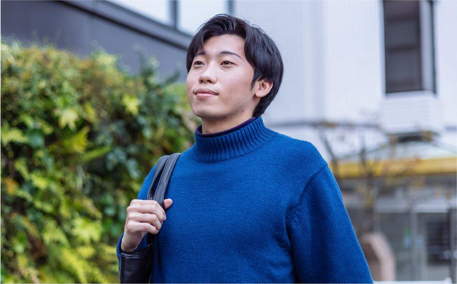
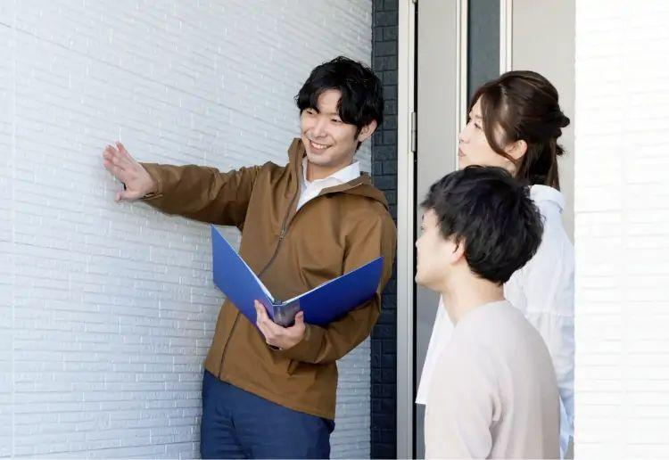

INTERVIEW No.01
「断られる仕事」だと思っていた。実際は、感謝される仕事でした。
S.K住居時間｜名古屋支店
- 職種
- リフォームアドバイザー
- 入社
- 2024年入社
- 出身
- 文学部卒
Q1入社の決め手は？
説明会で「売る前に、まず家の困りごとを聞くのが仕事」と聞いたことです。営業にはきついイメージしかなかったのですが、先輩たちが楽しそうにお客様の話をしているのを見て、ここなら自分も続けられると思いました。
Q2訪問営業に、不安はありませんでしたか？
もちろんありました。最初の3か月は先輩と一緒に回るので、話し方や引き際を横で見て覚えられました。ひとりで立つ日が来たときも、チームの誰かがすぐ電話に出てくれる安心感がありました。
Q3いちばん印象に残っているお客様は？
外壁のひび割れをずっと気にされていたご夫婦です。工事が終わったあと「これで孫を安心して呼べる」と言っていただき、仕事の意味が初めて腹落ちしました。
Q4正直、大変だったことは？
話を聞いてもらえない日が続いたことです。そこで落ち込みすぎないよう、毎日の振り返りでブラザーの先輩が一緒に原因を整理してくれました。
Q5これからの目標は？
2年目のうちに主任になり、今度は自分が後輩の不安を受け止める側になりたいです。

学生時代
学生時代は書店でアルバイト。人と話すのは好きだが、営業は避けていた。
休日の過ごし方
休みの日は友人とカフェ巡り。月火の連休で、平日の空いている時間に出かけられるのが気に入っている。
CAREER
これまでのキャリア
2024年4月
住居時間に入社。名古屋支店に配属
2024年7月
フィールド研修を終え、担当エリアを持つ
2025年3月
チームの月間目標達成に貢献し、新人チャレンジで表彰
2026年
主任を目指して後輩の同行を担当中
ONE DAY
S.Kさんの1日
10:30
出社・チームミーティング
11:00
担当エリアの確認と準備
11:30
先輩と担当エリアへ
13:00
昼休憩
14:00
午後の訪問・ヒアリング
17:00
商談担当と次回の提案を打ち合わせ
18:30
帰社・日報、ブラザーとの振り返り
19:30
退社
MESSAGE
就活生へのメッセージ
「最初から完璧な人はいません。迷っているなら、まず説明会で話を聞いてみてください。」
住居時間｜S.K